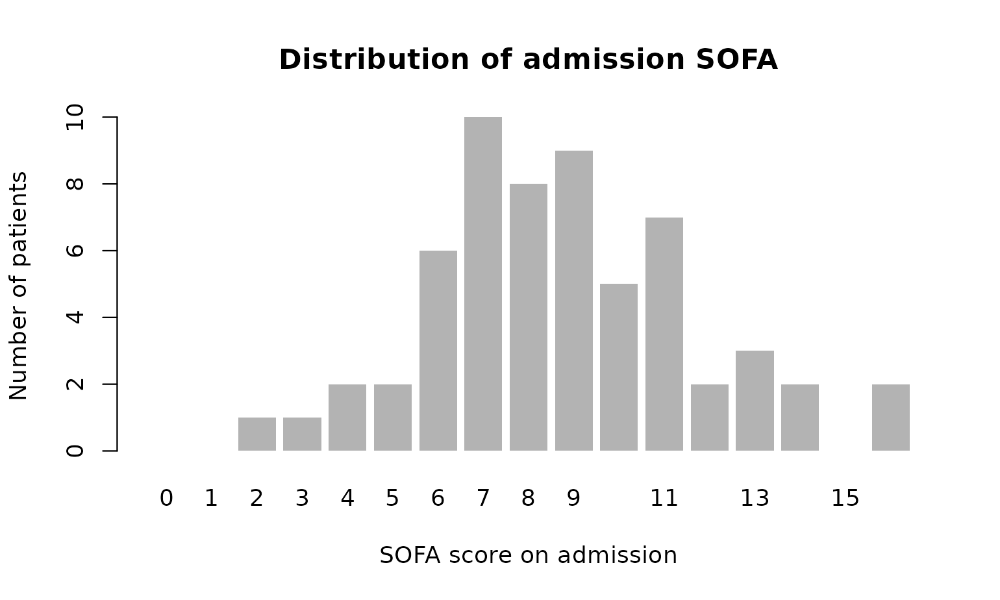
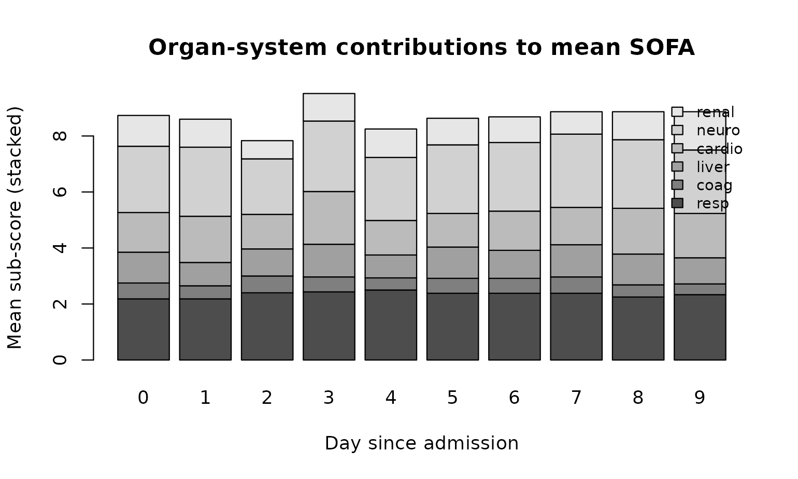
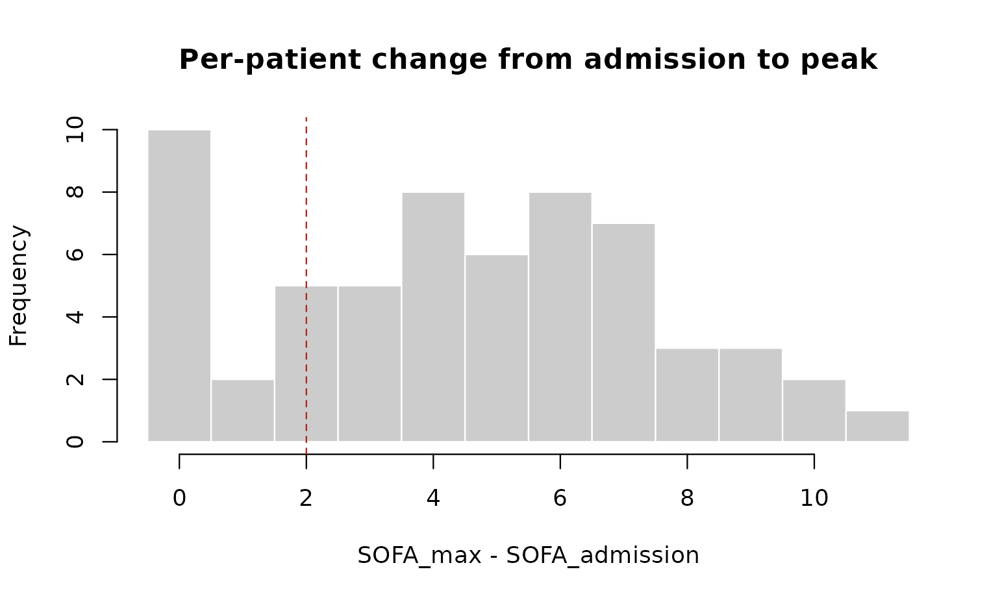

Case study: SOFA in a synthetic ICU cohort
Source:vignettes/articles/case-study-icu-cohort.Rmd
case-study-icu-cohort.RmdThis article walks through a typical analysis you might run on an ICU cohort once SOFA scores are computed: cohort-level summaries, day-by-day trajectories, sub-score contributions, and a quick face-validity check against the underlying clinical features. The dataset is the synthetic one shipped with the package — no real patients — so the numbers illustrate the workflow only.
Everything below uses base R plus sofamatic. No
additional packages are required.
A worked cohort
Generate a slightly larger cohort than the README example: 60 subjects, 10 days each, in long format.
cohort <- example_sofa_data(n_subjects = 60, days_each = 10)
dim(cohort)
#> [1] 600 17
head(cohort, 3)
#> subject_id day age sex bmi pao2_fio2 ventilated platelets bilirubin
#> 1 1 0 78 M 34 12.1 1 91 39
#> 2 1 1 78 M 34 9.4 1 215 28
#> 3 1 2 78 M 34 22.3 1 170 52
#> vasopressors noradrenaline map sedation gcs creatinine urine_output dialysis
#> 1 1 0.034 52.9 1 NA 106 1177 0
#> 2 0 0.000 93.8 1 9 54 889 0
#> 3 0 0.000 74.6 1 3 20 163 0Compute every sub-score, the total SOFA_score, plus the
longitudinal helpers SOFA_admission and
SOFA_max in a single call.
scored <- calculate_sofa(cohort, id = "subject_id", time = "day")
scored[scored$subject_id == 1,
c("day", "SOFA_resp", "SOFA_coag", "SOFA_liver",
"SOFA_cardio", "SOFA_neuro", "SOFA_renal",
"SOFA_score", "SOFA_admission", "SOFA_max")]
#> day SOFA_resp SOFA_coag SOFA_liver SOFA_cardio SOFA_neuro SOFA_renal
#> 1 0 4 2 2 3 2 0
#> 2 1 4 0 1 0 3 0
#> 3 2 3 0 2 0 4 4
#> 4 3 3 0 2 0 2 1
#> 5 4 0 0 0 0 4 4
#> 6 5 0 0 2 0 2 1
#> 7 6 2 2 2 0 2 2
#> 8 7 2 0 0 0 3 0
#> 9 8 3 0 1 3 4 0
#> 10 9 3 0 0 0 1 1
#> SOFA_score SOFA_admission SOFA_max
#> 1 13 13 13
#> 2 8 13 13
#> 3 13 13 13
#> 4 8 13 13
#> 5 8 13 13
#> 6 5 13 13
#> 7 10 13 13
#> 8 5 13 13
#> 9 11 13 13
#> 10 5 13 13Three views ship out the door for free:
- row-level sub-scores and total (
SOFA_resp…SOFA_score), - per-subject admission score (
SOFA_admission, constant withinsubject_id), - per-subject worst score during follow-up
(
SOFA_max).
The cohort at admission
What does organ failure look like on day 0?
admission <- scored[scored$day == 0, ]
barplot(table(factor(admission$SOFA_score,
levels = 0:max(admission$SOFA_score))),
col = "grey70", border = NA,
xlab = "SOFA score on admission",
ylab = "Number of patients",
main = "Distribution of admission SOFA")
A common cohort summary is the prevalence of organ failure per system, defined as a sub-score ≥ 3:
parts <- c("SOFA_resp", "SOFA_coag", "SOFA_liver",
"SOFA_cardio", "SOFA_neuro", "SOFA_renal")
prevalence <- sapply(parts, function(p) mean(admission[[p]] >= 3))
round(sort(prevalence, decreasing = TRUE), 2)
#> SOFA_resp SOFA_cardio SOFA_neuro SOFA_renal SOFA_coag SOFA_liver
#> 0.43 0.40 0.40 0.15 0.07 0.00Trajectories over the first 10 days
Mean and inter-quartile band of SOFA_score by day:
by_day <- aggregate(SOFA_score ~ day, scored, FUN = function(x) {
c(mean = mean(x),
q25 = unname(quantile(x, 0.25)),
q75 = unname(quantile(x, 0.75)))
})
by_day <- do.call(data.frame, by_day)
names(by_day) <- c("day", "mean", "q25", "q75")
plot(by_day$day, by_day$mean, type = "n",
ylim = range(c(by_day$q25, by_day$q75)),
xlab = "Day since admission",
ylab = "SOFA score",
main = "Mean SOFA across the cohort (band = IQR)")
polygon(c(by_day$day, rev(by_day$day)),
c(by_day$q25, rev(by_day$q75)),
col = adjustcolor("steelblue", alpha.f = 0.2), border = NA)
lines(by_day$day, by_day$mean, col = "steelblue", lwd = 2)
points(by_day$day, by_day$mean, col = "steelblue", pch = 19)A spaghetti plot of individual trajectories shows how heterogeneous the cohort is at the patient level:
plot(NA, xlim = range(scored$day),
ylim = c(0, max(scored$SOFA_score)),
xlab = "Day since admission",
ylab = "SOFA score",
main = "Per-patient SOFA trajectories")
for (sid in unique(scored$subject_id)) {
s <- scored[scored$subject_id == sid, ]
s <- s[order(s$day), ]
lines(s$day, s$SOFA_score,
col = adjustcolor("black", alpha.f = 0.25))
}Which organ systems drive the score?
Mean of each sub-score by day, stacked:
mean_parts <- sapply(parts, function(p)
tapply(scored[[p]], scored$day, mean, na.rm = TRUE))
barplot(t(mean_parts),
col = grey.colors(length(parts), start = 0.3, end = 0.9),
legend.text = sub("SOFA_", "", parts),
args.legend = list(x = "topright", bty = "n", cex = 0.8),
xlab = "Day since admission",
ylab = "Mean sub-score (stacked)",
main = "Organ-system contributions to mean SOFA")
In this synthetic cohort the respiratory and cardiovascular components dominate, which is consistent with how the underlying generator was calibrated (heavy ventilation prevalence, frequent vasopressor use).
Worsening vs. recovery
Many studies define ICU deterioration as
SOFA_max − SOFA_admission ≥ 2. Because
calculate_sofa() returns both numbers per row, the
calculation is one line.
per_subject <- scored[!duplicated(scored$subject_id),
c("subject_id", "SOFA_admission", "SOFA_max")]
per_subject$delta_SOFA <- per_subject$SOFA_max - per_subject$SOFA_admission
table(deteriorated_2plus = per_subject$delta_SOFA >= 2)
#> deteriorated_2plus
#> FALSE TRUE
#> 12 48
hist(per_subject$delta_SOFA,
breaks = seq(-0.5, max(per_subject$delta_SOFA) + 0.5, by = 1),
col = "grey80", border = "white",
xlab = "SOFA_max - SOFA_admission",
main = "Per-patient change from admission to peak")
abline(v = 2, lty = 2, col = "firebrick")
Face-validity checks
Two quick sanity checks tying sub-scores back to their clinical inputs. The respiratory sub-score should be higher in ventilated rows; the cardiovascular sub-score should be higher in rows on vasopressors.
op <- par(mfrow = c(1, 2))
boxplot(SOFA_resp ~ ventilated, data = scored,
names = c("not vent.", "ventilated"),
ylab = "Respiratory SOFA",
main = "Resp. SOFA by ventilation")
boxplot(SOFA_cardio ~ vasopressors, data = scored,
names = c("no pressors", "on pressors"),
ylab = "Cardiovascular SOFA",
main = "Cardio. SOFA by vasopressor use")
par(op)Both shifts go in the expected direction — a useful smoke test you can copy onto your own data after wiring up the column-name mapping.
Bringing your own data
Real datasets rarely come with the package’s default column names or units. Override any of them at the call site. The example below uses mmHg for PaO2/FiO2 and mg/dL for bilirubin and creatinine, with custom column names throughout.
my_data <- data.frame(
pid = c("A", "B", "C"),
pf_ratio = c(420, 220, 95),
is_vent = c(0, 1, 1),
plt = c(180, 60, 22),
bili_mgdl = c(0.7, 3.2, 8.0),
pressors = c(0, 1, 1),
ne_dose = c(0, 0.06, 0.25),
map_mmhg = c(82, 68, 58),
on_sed = c(0, 1, 1),
gcs = c(15, NA, 5),
cr_mgdl = c(0.9, 1.6, 3.4),
uo_24h = c(2200, 900, 250),
rrt = c(0, 0, 1)
)
calculate_sofa(
my_data,
pao2_fio2 = "pf_ratio", units_pao2_fio2 = "mmHg",
ventilated = "is_vent",
platelets = "plt",
bilirubin = "bili_mgdl", units_bilirubin = "mg/dL",
vasopressors = "pressors",
noradrenaline = "ne_dose",
map = "map_mmhg",
sedation = "on_sed",
gcs = "gcs",
creatinine = "cr_mgdl", units_creatinine = "mg/dL",
urine_output = "uo_24h",
dialysis = "rrt"
)[, c("pid", "SOFA_resp", "SOFA_coag", "SOFA_liver",
"SOFA_cardio", "SOFA_neuro", "SOFA_renal", "SOFA_score")]
#> pid SOFA_resp SOFA_coag SOFA_liver SOFA_cardio SOFA_neuro SOFA_renal
#> 1 A 0 0 0 0 0 0
#> 2 B 2 2 2 3 2 1
#> 3 C 4 3 3 4 4 4
#> SOFA_score
#> 1 0
#> 2 12
#> 3 22If a variable is unmeasured in your dataset, pass NULL
for it. With na_strategy = "sum_na_zero" (the default) the
missing component contributes 0 to the total; with
na_strategy = "propagate" the total becomes NA
whenever any sub-score is missing.
no_urine <- my_data
no_urine$uo_24h <- NA
calculate_sofa(no_urine,
pao2_fio2 = "pf_ratio", units_pao2_fio2 = "mmHg",
ventilated = "is_vent",
platelets = "plt",
bilirubin = "bili_mgdl", units_bilirubin = "mg/dL",
vasopressors = "pressors",
noradrenaline = "ne_dose",
map = "map_mmhg",
sedation = "on_sed",
creatinine = "cr_mgdl", units_creatinine = "mg/dL",
urine_output = "uo_24h",
dialysis = "rrt",
na_strategy = "propagate")[, c("pid", "SOFA_score")]
#> pid SOFA_score
#> 1 A 0
#> 2 B 12
#> 3 C 22Caveats
The cohort used here is synthetic. Distributions are loosely
calibrated to look plausible on an adult ICU service, but the data are
not suitable for any clinical inference — they exist only to demonstrate
the package API and the shape of analyses it enables. Replicate this
notebook against your own dataset and the patterns will tell you
something meaningful; replicate it against
example_sofa_data() and the patterns tell you only about
the generator.